局域网技术
LAN Technology
局域网组成
- 局域网 LAN
- 以太网 Ethernet
- 无线局域网 WLAN
网络传输媒质
-
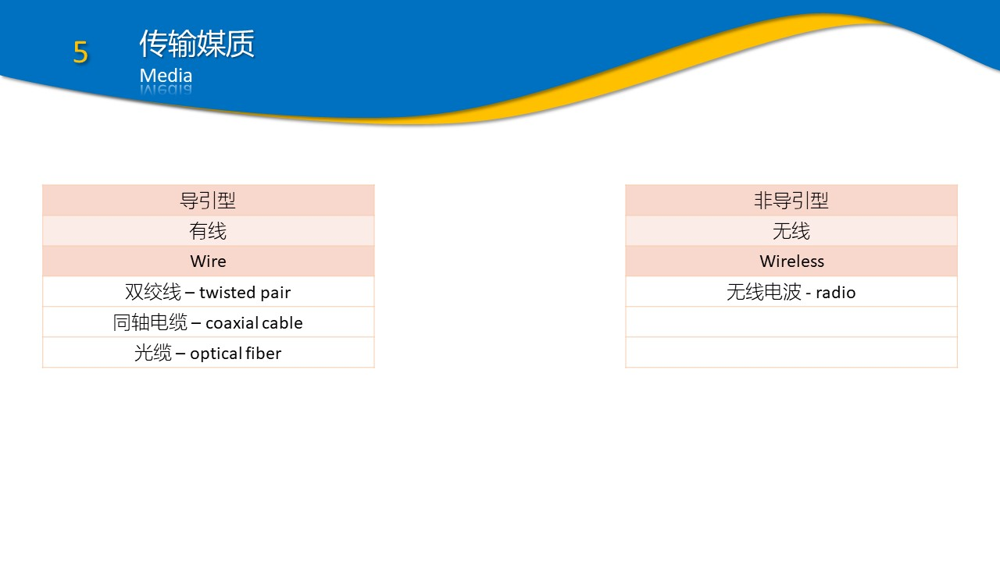 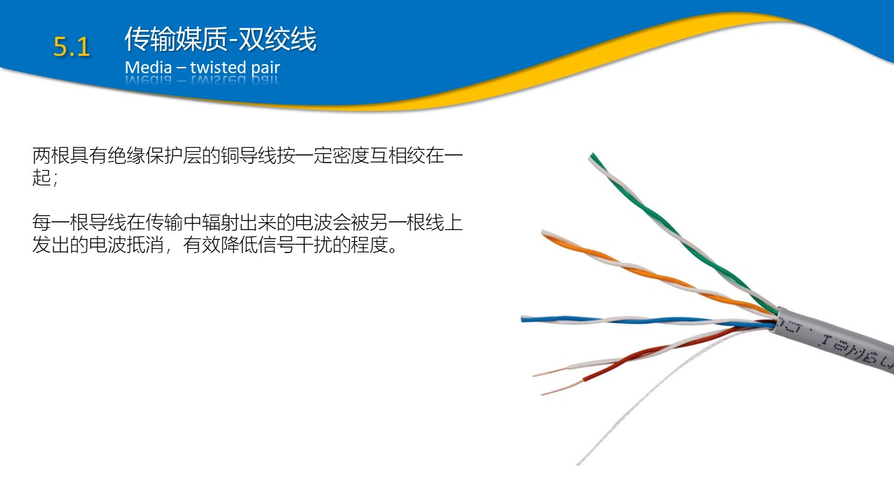 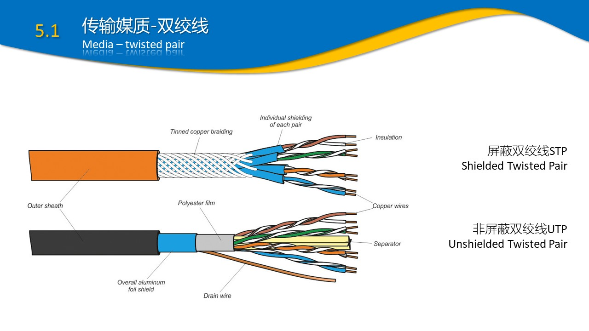 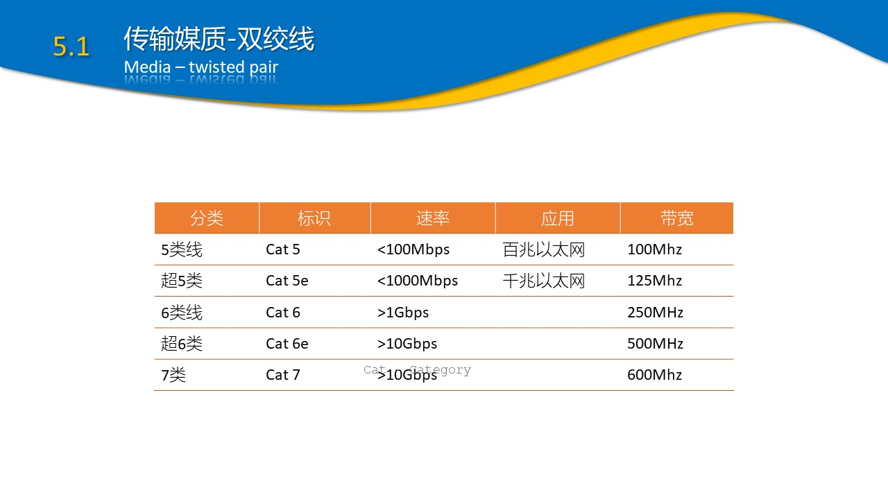 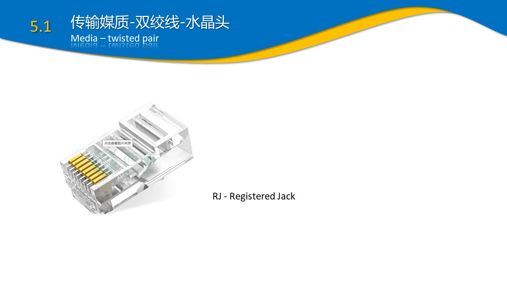 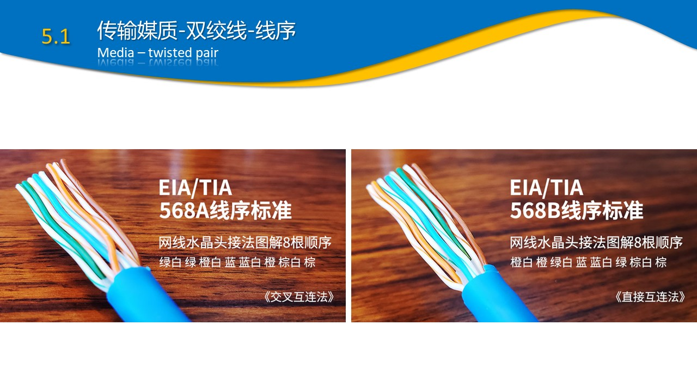 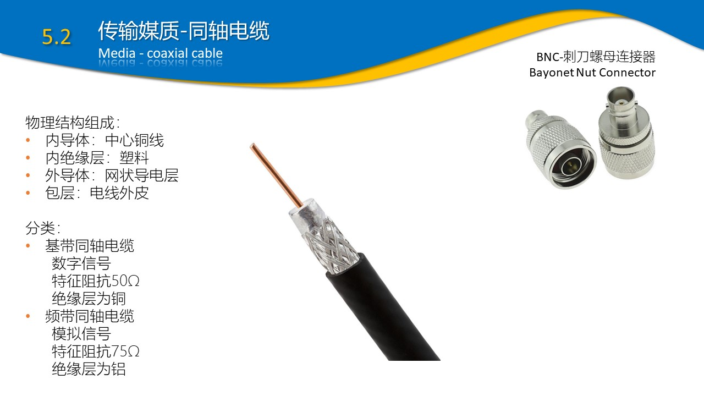 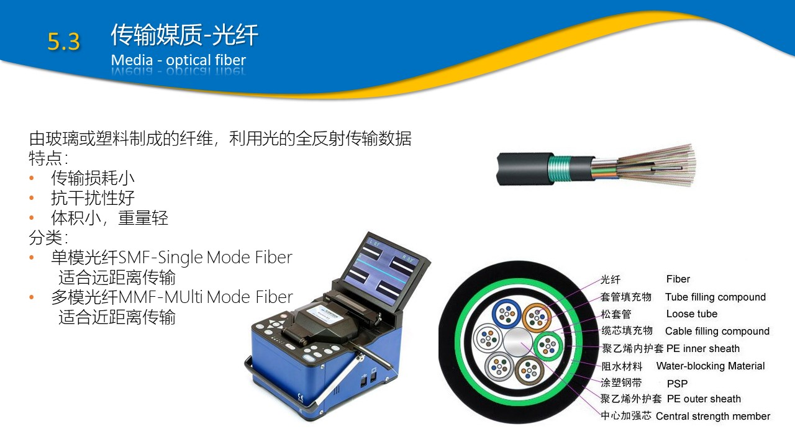 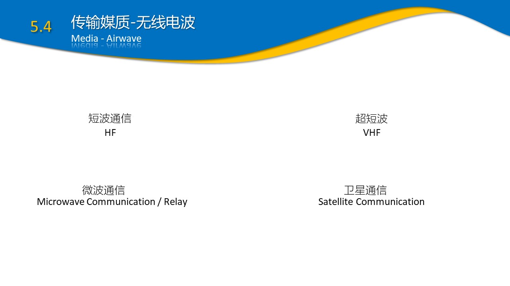 - 观看资料区视频：双绞线制作、光纤、无线电
局域网互联设备
- 中继器 Repeater
- 物理层设备
- 由于存在损耗, 线路上传输的信号功率会逐渐衰减，衰减到一定程度时将造成信号失真，导致接收错误。中继器可以解决这一问题
- 连接两个网络节点，负责物理信号的双向转发工作，完成信号的复制、调整和放大 ，延长网络长度，使信号传的更远
- 最简单的网络互联设备
-

中继器 - 集线器 Hub
- 物理层设备
- 能够提供 多端口 服务：把每个输入端口的信号放大再发到别的端口去，也称多口中继器
- 每个口都能连计算机：可以实现多台计算机之间的互联
-

集线器 - 网桥 Bridge
- 数据链路层设备
- 连接局域网LAN，根据MAC地址来转发帧，扩展网络的距离
- 可以看作一个低层的路由器
-
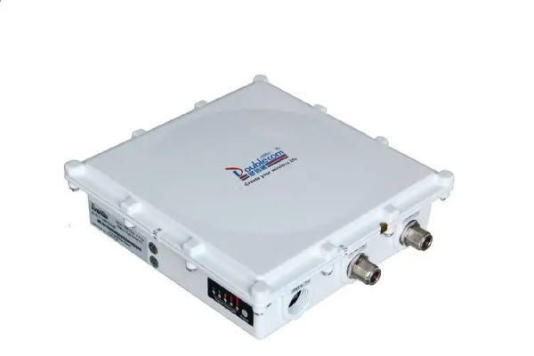 网桥 - 交换机 Swich
- 数据链路层设备
- 具备自动寻址能力和交换作用
- 维护一张MAC地址表，根据MAC地址转发数据帧到指定端口
- 数据帧的转发由硬件完成，交互速度非常块
- 常常用来连接独立的计算机，端口非常多
-
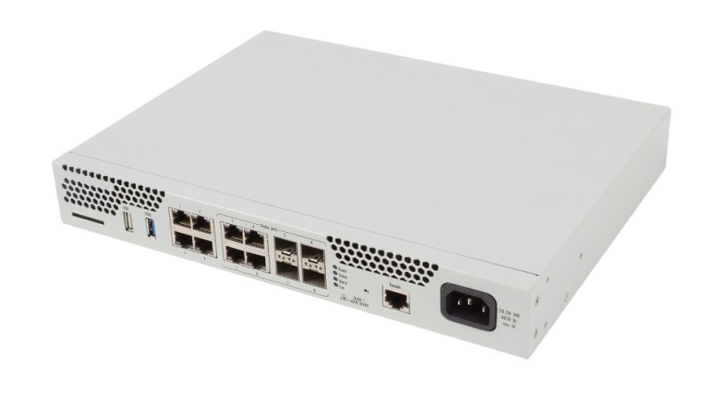 交换机 - 路由器 Router
- 网络层设备
- 用于连接多个逻辑上分开的网络，实现网络的互连和隔离
- 根据路由协议，选择合适的路由，将IP数据报传送到目标网络
- 路由过程：检查接收到的数据包的IP地址，如果目标网络是本地网络，不予理会；如果是其他网络，就将数据包转发出通过相应的端口转发出去；如果没有找到目标网络，就把数据包送给缺省网关default gateway
- 维护一个路由表，对于每一个接收到的数据包，路由器都会 重新 计算并更新路由表
- 使用专门的软件协议从逻辑上对整个网络进行划分，每个网络可以使用不同协议和体系结构，保持各个网络的独立性
- 网络中的设备使用IP地址互相通信。IP地址是与硬件地址无关的逻辑地址。Internet就是成千上万个IP子网通过路由器互连起来的国际性网络
-
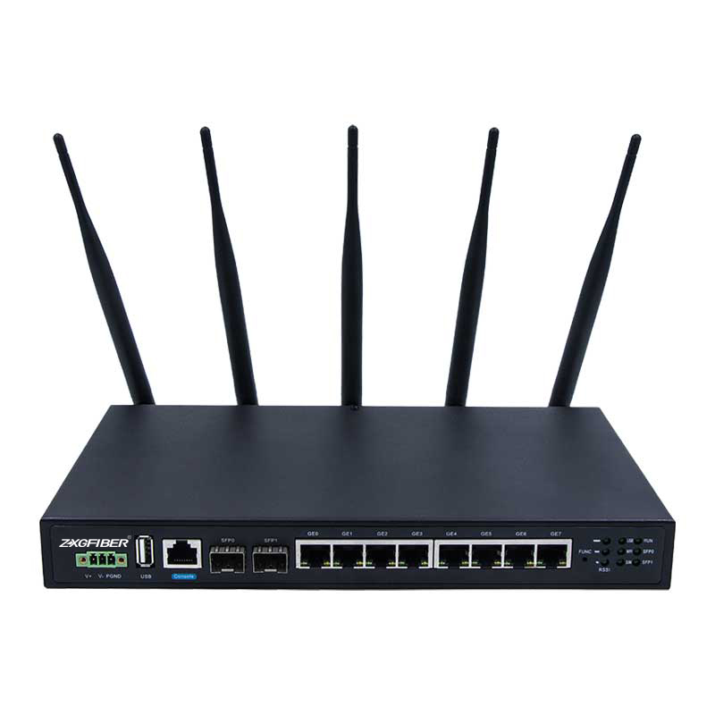 路由器 - 网卡|适配器 Adapter
- 物理层设备
- 早期称为网卡，是独立设备；现在都是集成在主板上
- 有自己的处理器和存储器（包括RAM和ROM）
- 连接主机和局域网的设备：网卡和局域网之间通过电缆或双绞线以串行传输方式通信；而网卡和计算机之间通过计算机主板上的I/O总线以并行传输方式通信
- 由于网络上的数据率和计算机总线上的数据率并不相同，因此在网卡中还必须装有对缓存数据的存储芯片
-
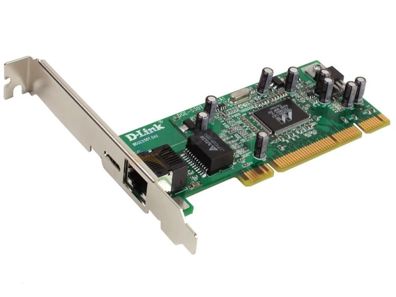 适配器 - 网关 Gateway
- 网络层设备
- 网络的关口，连接两个不同网络的接口,又称网间连接器、协议转换器
- 使用在不同的通信协议、数据格式或语言，甚至体系结构完全不同的两种网络系统之间
- 实现网络互连，是最复杂的网络互连设备，仅用于两个高层协议不同的网络互连
- 既可以用于广域网互连，也可以用于局域网互连。网关是一种充当转换重任的计算机系统或设备
- 是一个翻译器：与网桥只是简单地传达信息不同，网关对收到的信息要重新打包，以适应目的系统的需求
-
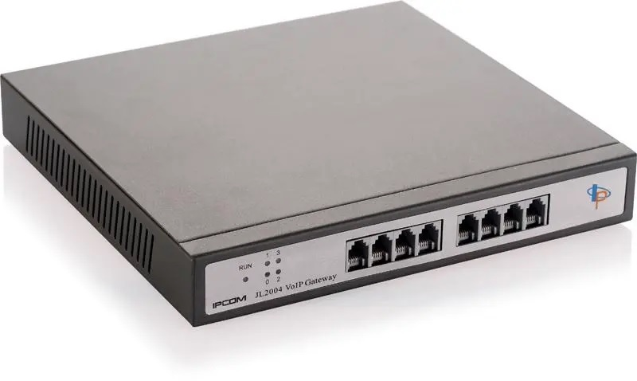 网关